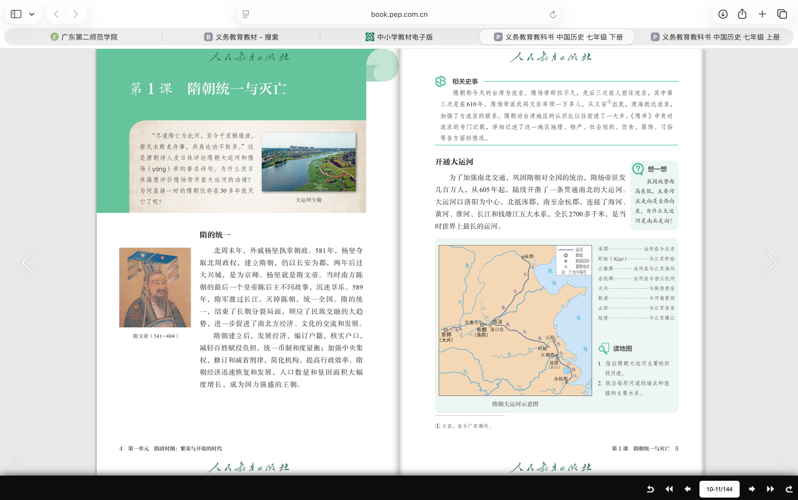
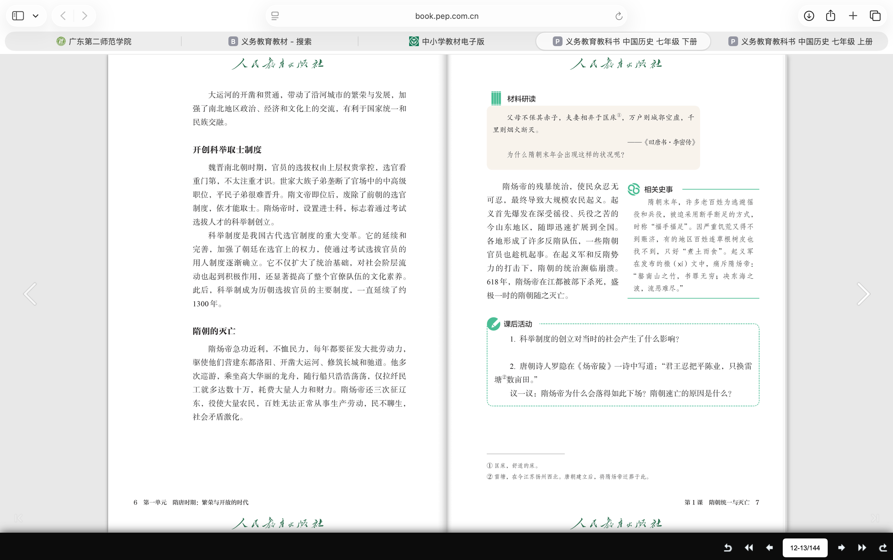
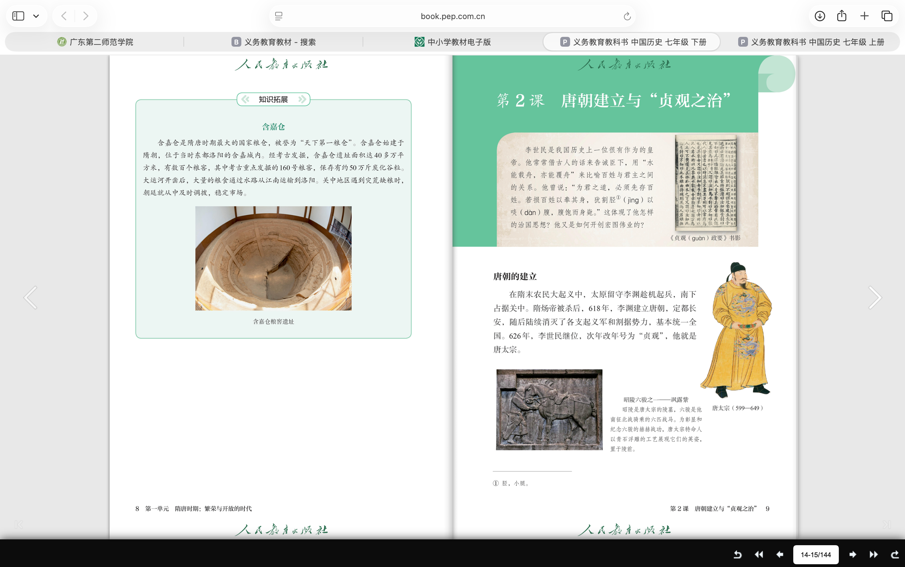

统一为什么成为可能？
个人决策发生在长期结构变化之中。

教材结论
隋的统一结束了长期分裂局面，顺应了统一多民族国家发展的历史趋势。
横向展开
北朝以来的民族交往、交流、交融，南北经济的恢复与联系，以及民众结束战乱的愿望，共同构成统一的社会基础。杨坚整顿吏治、发展生产，是把这种可能变成现实的政治条件。
解释边界：不能把统一只归因于“某位君主英明”，也不能忽略陈朝政治腐败、防务松弛这一直接条件。
七年级下册 · 第1课
581 — 589 — 605 — 618
581—589 · 从分裂到统一
605年起 · 空间如何被连接
制度创新 · 人才如何进入政治
大业年间 · 国家动员如何反转
“父母不保其赤子，夫妻相弃于匡床。”《旧唐书·李密传》所载讨隋檄文
回到开场问题
隋朝的历史价值，不只在于“做成了什么”，也在于揭示：国家工程的成效，最终取决于治理目标、制度节制与社会承受力之间的平衡。
个人决策发生在长期结构变化之中。

隋的统一结束了长期分裂局面，顺应了统一多民族国家发展的历史趋势。
北朝以来的民族交往、交流、交融，南北经济的恢复与联系，以及民众结束战乱的愿望，共同构成统一的社会基础。杨坚整顿吏治、发展生产，是把这种可能变成现实的政治条件。
解释边界：不能把统一只归因于“某位君主英明”，也不能忽略陈朝政治腐败、防务松弛这一直接条件。
宏伟都城既是工程，也是政治制度的可视化。
考古工作基本厘清宫城、皇城、外郭城及里坊格局。南北轴线组织宫殿、官署与城市空间，显示中央权力对都城的整体规划。
“龙首山川原秀丽……宜建都邑。”
《隋书·高祖纪》的建都叙述说明中央决策；城址则呈现决策落地后的尺度与秩序。两类材料共同支持“统一不仅是疆域合一，也是制度与政治空间的重组”。
证据边界：都城规模能说明规划和动员能力，不能据此推断所有社会成员都生活富足。
西安市地方志资料 ↗以洛阳为中心，北抵涿郡，南至余杭。

加强南北交通，巩固隋王朝对全国的统治。它把政治中心、经济重心和军事行动需要纳入同一条运输体系。
运河促进南北经济交流，并与沿线城市、仓储和漕运制度共同运转。2014年“中国大运河”列入《世界遗产名录》，其遗产价值也来自持续千年的交通、城市与水利系统。
理解关键：“促进交流”与“加重负担”并不矛盾，分别讨论工程的长期功能与当时的征发方式。
联合国教科文组织：大运河 ↗粮食从哪里来、装多少、谁负责，都被写进制度。
含嘉仓发现四百余座粮窖；铭砖记录储粮的品种、来源、数量、时间、窖位和经手官员。它把运河运输、洛阳仓城和行政责任连接成可核验的链条。
“开皇十七年，户口滋盛，中外仓库，无不盈积。”
《隋书·食货志》概述“开皇之治”的积储；仓址和铭砖让“仓库”从抽象文字变成具体制度空间。
证据边界：唐代铭砖能证明隋所开创体系的后续运行，不能直接充当隋代某年的精确统计。
中国国家博物馆藏品说明 ↗后世受益于工程，不等于当时征发方式合理。
“发河南诸郡男女百余万，开通济渠。”
《通典·漕运》中的“百余万”具有古代文献常见的概数性质，却清楚呈现工程规模与征发强度。
关键不在于简单判断工程“功”或“过”，而在于区分：工程的长期公共效用、隋炀帝时期的政治目的、施工节奏以及百姓承担的即时成本。
学术表述：大运河不是隋亡的单一原因；密集工程、巡游和战争叠加，使国家汲取超过社会承受能力，才形成系统性危机。
隋朝确立方向，唐代以后逐步完善。

隋文帝开始采用分科考试的办法选拔官员；隋炀帝时进士科的创立，标志科举制正式确立。选官标准由门第背景转向学识才干，中央也获得更直接的人才选拔渠道。
“炀帝始建进士科。”
《通典·选举二》由唐代制度史家杜佑追述隋制，抓住了这一转向，但科目、程序与录取机制是在唐以后继续发展成熟的。
概念边界：“扩大选官范围”是制度方向的改变，不等于隋代已经实现现代意义上的平等竞争。
《通典·选举二》文本 ↗一个九岁女孩的墓葬，保存了北周—隋的家族网络与欧亚交流。


墓志详列父祖官爵与皇室关系：独孤氏、宇文氏、杨氏和李氏彼此联结，说明隋代上层政治仍深受家族网络影响。
嵌珍珠宝石金项链、金银高足杯、玻璃器等呈现多种工艺传统，说明长安上层社会处于跨区域物质文化交流之中。
互证结论：科举具有突破门第限制的制度意义，但社会结构不会一夜改变。墓葬代表特定上层个案，也不能推及整个隋代社会。
中国国家博物馆专题展览 ↗战争失败不仅损耗军队，也打断农业生产与基层家庭。
大规模征兵需要粮草、运输与民夫。连续战争与工程叠加，青壮年离开土地，农业生产受损；征输继续加码，逃亡与反抗遂由局部扩展为全国性危机。
讨隋檄文用家庭离散强化控诉，具有鲜明政治动员目的；《隋书》本纪、列传所记诏令、战役与起事地点，可用来校验事件进程。
因果链：急功近利的决策 → 高频率征发 → 生产与家庭受损 → 民变扩散 → 军政系统瓦解。
文本讲述死亡，墓葬固定了时间、地点与身份。
2013年扬州曹庄墓葬出土墓志，残存“隋故炀帝墓志”“大业十四年”等文字。墓葬形制、十三环蹀躞金玉带等遗物与文献对读，专家论证确认墓主为隋炀帝。
墓志确认618年的死亡与终葬信息；纪传与檄文则解释危机如何形成。出土材料与传世文献分工不同，组合后才能形成较完整的历史解释。
证据边界：墓志能确认墓主和关键时间，不能单独解释隋朝灭亡的全部原因。
扬州博物馆考古成果 ↗结论不是材料的重复，而是受到证据约束的解释。